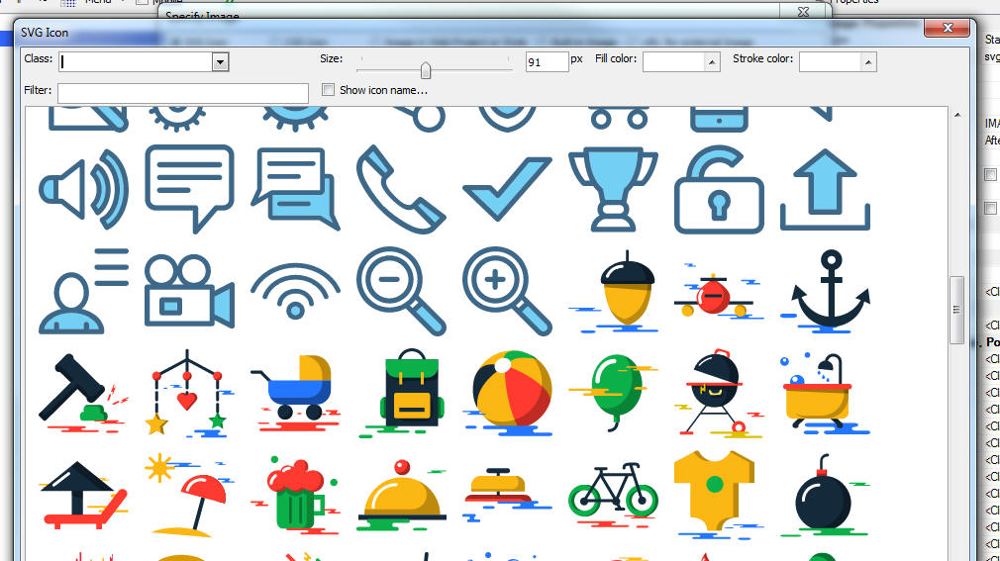
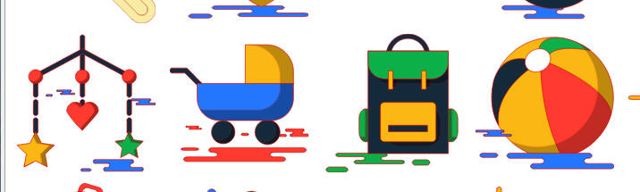
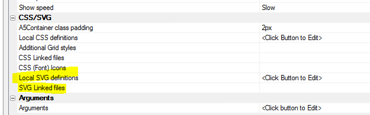
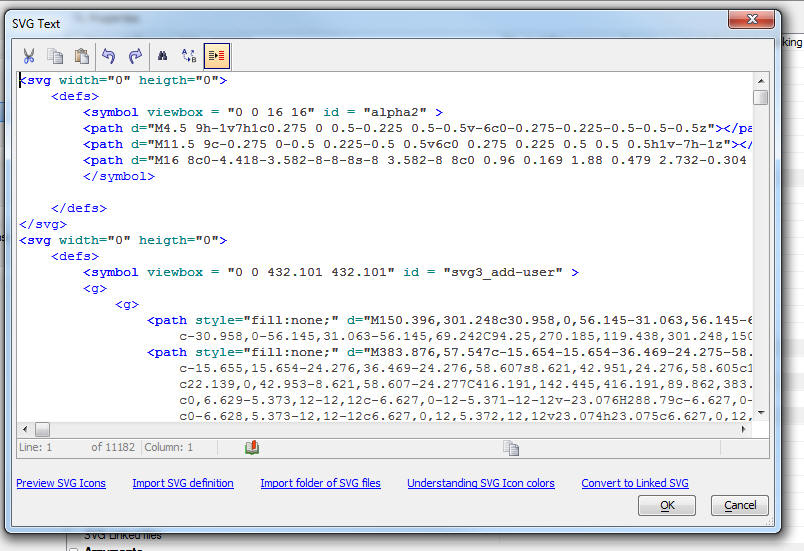
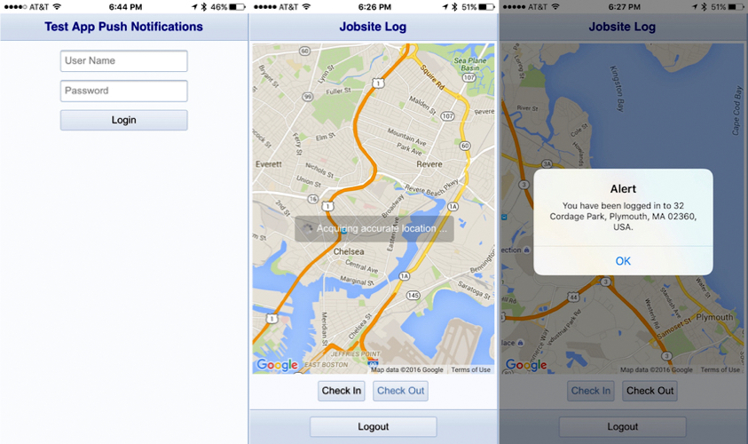
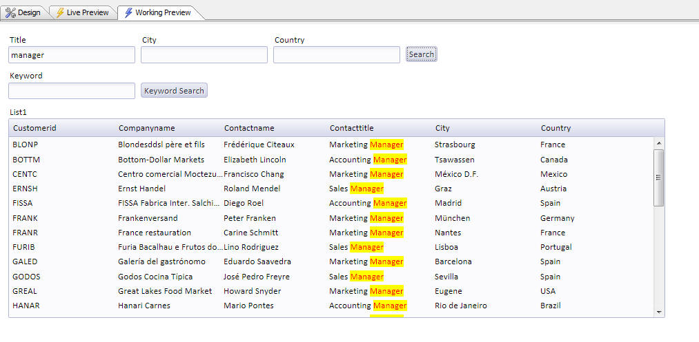
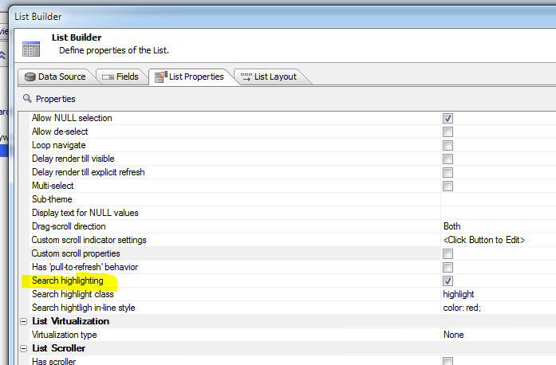
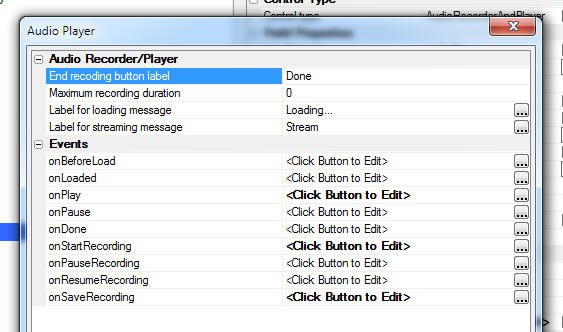
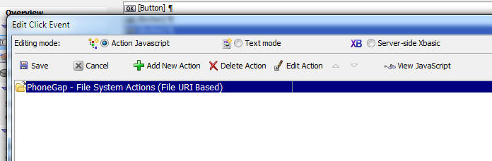

This is a list of release notes for Alpha Anywhere 4.1 to verify/move into the help system. The following directories are associated with this file: "Alpha_4.3.2_ReleaseNotes_files"
As this content is moved into the help system, please delete it from this file.
Guidelines:
| UX Component - List Control | Search Highlighting |
When you perform a server-side search to filter
records in a List you can highlight the matching
characters in each record. This makes it easy to
see why the record was included in the search
result. Watch Video Date added: 2016-04-24 |
| SVG Icons | Introduction to SVG Icons |
SVG Icons have many benefits over bitmap images
and font icons. In this video we introduce you
to SVG icons and show how they can be used in
your components. Watch Video Date added: 2016-05-01 |
| SVG Icons | Search the Web for SVG Icons and Importing into Components |
There are a large number of free SVG icons
available for download on the web. In this video
we show how you can download SVG files from a
site that specializes in SVG images and then
import the SVG files for use in your components. Watch Video Date added: 2016-05-01 |
| SVG Icons | Converting Locally Defined SVG Icons to Linked SVG Files |
SVG icons can either be defined within a
component, or they can be stored in physical
files that are linked by your components. The
advantage of using linked files is that
many components can share the same SVG icon
definitions. In this video we show how you can
easily convert locally defined SVG into a file
of SVG icons that can then by linked by many
components. Watch Video Date added: 2016-05-01 |
| SVG Icons | Using SVG Icons in a List Control on a UX Component |
A common pattern in mobile applications is to
use a List control as the menu for the
application. It is common to use icons in the
menu List. In this video we show how SVG icons
can be used in these menu Lists. Watch Video Date added: 2016-05-01 |
| UX Component - PhoneGap | Sending Push Notifications using the Pushwoosh Service |
A common feature in mobile applications is push
notifications. In a PhoneGap application, this
can be be done, utilizing the Pushwoosh plugin,
which integrates the Pushwoosh service. This video shows an example application that uses push notifications. Watch Video - Part 1 Watch Video - Part 2 Documentation - PhoneGap Push Notifications Date added: 2016-04-28 |
SVG Icons - The Grid, UX and TabbedUI components now support SVG icons.
Introduction to SVG Icons - Video
SVG icons have several very important advantages over traditional bitmap icons. Namely:
While the same advantages are also true of font icons, which Alpha Anywhere has supported for some time now, SVG icons are easier to work with than font icons.
An additional benefit of SVG icons over font icons is the ability to support colored icons. With a font icon you can specify a color for the entire icon - but not for different aspects of the icon. In other words, a font icon is always green, red, yellow, or whatever color you specify. Whereas an SVG icon can be mostly green, red, yellow, or whatever color you specify for the 'fill' and 'stroke' color, but certain parts of the icon can be hard-coded as a particular color.
There are a large number of freely available SVG icons on the web. A particularly good source of free SVG icons is http://www.flaticon.com/
In the screen shot below, two different icon sets are shown in the SVG Image picker. These icons were imported from icon sets on www.flaticon.com. As the image shows, the second icon set is richly colored.

In this next screenshot the icons are shown at a much larger size. As you can see, the icons scale smoothly.

There are two ways to use SVG icons in a component:
To use locally defined SVG, you set the Local SVG definitions property in the CSS/SVG section in the component builder. To use linked SVG files you set the SVG Linked files property in the CSS/SVG section in the component builder.

Locally Defined SVG
When you open the builder for Local SCG definitions you get a screen where you can enter the SVG definitions. For example:

As you can see, the SVG definition looks quite formidable, but this is largely irrelevant because the SVG will, in almost all cases, be generated by importing SVG files that you have downloaded, or will have been created by an SVG authoring tool that you use.
How to Import SVG Files
Once you have found a source of SVG icons on the web that you want to use in your components, you will need to import the SVG. To import SVG files:
After you import the SVG into the builder, you might want to manually edit the SVG. The most common type of edit you might want to perform on the imported SVG is to change the fill and stroke color on the SVG icons. Click the Understanding SVG Icon colors hyperlink for more information on this subject.
Converting Locally Defined SVG to Linked SVG
After you have imported SVG files into Local SVG definitions, you might want to convert the SVG that is locally defined, into a SVG file that is linked. The main reason for doing this is so that other components can use the same SVG icon definitions.
To do this, click the Convert to Linked SVG hyperlink on the dialog while you are editing the local SVG definitions..
Syntax for Specifying an SVG Icon
When you use a SVG icon in a component (for example as the image on a button, or in a List control, or as the image to display in a Dynamic Image control), you use a special syntax (generated automatically by the image picker). For example:
svgIcon=#svg3_safebox:52 {fill: red}
This syntax is very similar to the syntax used for CSS font icons. For example:
cssIcon=fa fa-heart fa-2x
In the case of the SVG icon, the prefix is 'svgIcon' and in the case of the CSS font icon, the prefix is 'cssIcon'
In the above example, the SVG icon is being displayed with a size of 52px and a fill color of red. The icon name being displayed is 'svg3_safebox'. Notice that the icon name is prefixed with a hash character.
Printing Ink Annotation over a Picture in a Report - a5_composite_picture_and_ink() Function -
If your database has picture fields and ink fields that were used to annotate pictures you might want to print a picture field with the ink annotation shown directly over the picture.
This is done by creating a calculated field that uses the special a5_composite_picture_and_ink() function.
This function takes the name of the field that contains the picture, the name of the field that contains the ink and (optionally) a base path. The base path is only needed if the picture field contains relative a relative filename. The base path is used to convert the relative image filename into an absolute filename.
a5_composite_picture_and_ink(c pictureFieldName, c inkFieldName [, c basePath])
For example, assume that your database has fields called picture1 and annotation1 and you want to print the ink in annotation1 over the picture in picture1. You could create a calculated field called compositeImage, defined as shown below, and then add this calculated field to your report.
compositeImage = a5_composite_picture_and_ink("picture1","annotation1")
PhoneGap - UX Component Template - Secure Login With Location Tracking And Pushwoosh Notifications
- This new UX component template is a mini-app that
is designed to introduce developers to the power of using native push notifications with Alpha Anywhere and
the Pushwoosh service.

The app offers user login and location check in and check out
for a mobile worker. When the user logs in or out, an admin user is sent a push notification that includes the user name and the date and time the user logged in or
out of the app. When the user checks in or out of a location, a marker is placed on a map, the lat/lon is reverse geocoded with the Google Geo-location API to determine
the exact address and a push notification is sent to the admin user. The admin user is identified in a Pushwoosh filter called Admin. This allows the admin user to
receive push notifications to track all activity within the app.
For a video overview of this component template, click the link below.
Video overview of the Secure Login With Location Tracking And Pushwoosh Notifications
To view the help documentation click the link below.
PhoneGap Push Notifications
UX Component - List Control - Search Highlighting
- When you perform a server-side search on the records in a List
control (using the 'Filter records in a List' action in Action
Javascript), or you apply a filter from a List's Search Part (either
server-side or client-side) you can now highlight the characters in each record that
were matched by the search. This makes it easy to see why a
particular record was included in the search result.
Watch Video
For example, in the image shown below, the table were searched for all records that contain the string 'manager' in the 'Contacttitle' field.

To turn on search highlighting, edit the List and check the Search highlight property, as shown in the image below. You will then be able to set the class name and in-line style to apply to the highlight characters.

UX Component - AudioPlayer and AudioRecordAndPlayer Controls - Events - Added event hooks to these controls.

Action Javascript - PhoneGap - File System Actions - A new action is now available in Action Javascript. The PhoneGap - File System Actions (Fire URI Based) is similar to the PhoneGap - File System Actions action in that they both allow actions such as read file, write file, create directory, delete directory, read directory, etc.. The key difference is the the File URI Based actions give you explicit control over which part of the device's file system the operations are performed in.
The PhoneGap - File System Actions actions operate on files in a default location, whereas the PhoneGap - File System Actions (Fire URI Based) actions allow to specify an explicit file location.

SQLite Database - Indexes - PhoneGap - When you use Action Javascript to construct a SQLite database you can now specify that indexes should be build for each table in your SQLite database. You can add as many indexes as you want. For each index you can define the columns used in the index.
Sending E-mail Using the SparkPost Service - email_send_SparkPost() Function - You can now use an Xbasic helper function to send e-mail using the SparkPost service. This service is similar to the Mandrill service. You must first go to sparkpost.com to get an API key. You will also be required to verify your ownership of you sending domain.
Once you have your API key and you have verified your domain ownership you can send e-mail in much the same way that you may have used the email_send_mandrill() function.
NOTE: Currently the email_send_sparkPost() function does not expose the ability to use merge variables in the HTML message. If you need this functionality, you must compose the message JSON manually. Refer to the SparkPost documentation.
Syntax
p Result = email_send_sparkpost( c key, A message)
Where
Example:
dim ms as p
ms.send_to = "john@acme.com:Optional friendly name for John
Smith,sally@acme.com"
ms.from_email = "sendername@acme.com"
ms.from_name = "Sales at Acme" 'friendly name - optional
ms.subject = "Information You Requested"
ms.message_html = "Here is the <b>information</b> you requested."
ms.message_text = "Plain text version of the message"
ms.attachments = "c:\alphasports\invoice.pdf,c:\alphasports\vendorlist.pdf"
dim key as c = "your sparkpostkey"
pp = email_send_SparkPost(key,ms)
You can optionally define attachments using an array syntax. Instead of defining a property called ms.attachments which has a comma delimited list of files to attach, you can define an array as shown in the example below::
dim ms.attachmentsArray[1] as p
ms.attachmentsArray[1].name="report.pdf"
ms.attachmentsArray[1].type=resolve_mime_type("pdf")
ms.attachmentsArray[1].content=base64encode(file.to_blob("c:\myfiles\invoice.pdf"))
In the body of your HTML message you can optionally include in-line images. To define in-line images you can either use a property that specifies a comma-delimited list of image filenames, or you can use an array syntax:
Array syntax:
dim ms.inlineImagesArray[1] as p
ms.inlineImagesArray[1].name = "myimage1.jpeg"
ms.inlineImagesArray[1].type = resolve_mime_type("jpg")
ms.inlineImagesArray[1].content = base64encode(file.to_blob("C:\Images\4296.JPG"))
Comma delimited filenames syntax:
ms.inlineImages = "c:\movieImages\4296.jpg|myimage1.jpeg"
Notice that the comma delimited names syntax specifies the image name (the name by which you will refer to the image in the HTML body) with a | delimiter. In the above example, the image name is 'myimage1.jpeg'
To use the in-line images in the HTML message body, you use this syntax:
Here is your inline image!<br><img src="cid:myimage1.jpeg">
Signature Control - Reports - PDF - If you print a report that contains a signature control bitmap image using the Amyuni PDF printer driver, the bitmap previously showed up with a black background. This is due to a bug in the Amyuni Printer Driver which does not properly render transparent image backgrounds.
Now, Alpha Anywhere will automatically convert the transparent
background on the image to white. If you want an explicit background
color, then set the image fill style to 'solid' and pick the
background color you want to use. The transparent background on the
image will be converted to the specified color.
PhoneGap - Custom Window onerror Event Handlers - By default, the Alpha Anywhere Javascript libraries add window.onerror handlers to certain functions in the Alpha Anywhere libraries. This can interfere with any window.onerror event handlers that you might want to add to your code.
You can now prevent Alpha Anywhere from adding system window.onerror event handlers by adding the following code to the client-side onRenderComplete event.
{dialog.object}.customWindowErrorEvents = true;
Grid Component - Search - 'Is blank' and 'Is not blank' - Were generating SQL statements that used the Length() function rather than the StringLength() function (which is the portable SQL function for string length).
Application Server - Xbasic Error Log - A change was made in how thread usage is calculated in the Application Server to reduce false thread error messages which could occur under rare conditions.
{kind=link}